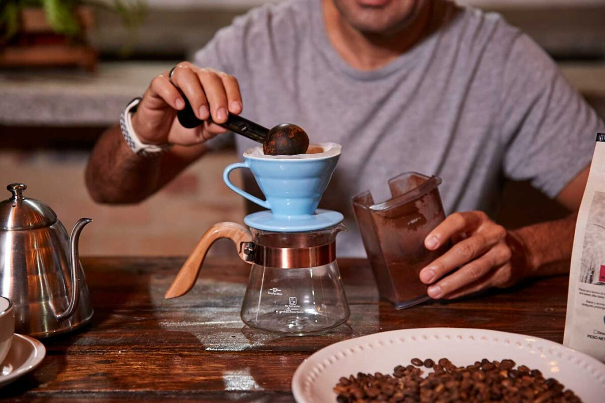

3 Recetas de Cafe
Chocolate y Cafe
La combinacion perfecta: frio,chocolate y cafe .Tambien debemos añadirle coco y el resultado es una bebida deliciosa, calorica y adictiva.Esta es una de las recetas con cafe mas populares entre los amantes de esta bebida.
Para comenzar, tendras que derretir chocolate(el de tu preferencia), a este chocolate ya en estado liquido, le añadiras el cafe.Despues puedes preparar la espuma de leche a la que luego le añadiras jarabe de coco, para termianr , cololcas la espuma de leche sobre el cafe y como toque final, puedes agregar trocitos de chocolate sobre la espuma.
Anis y Cafe
Por que el anis tiene numerosas propiedades positivas para la salud y sobre todo para la salud en invierno, dado que alivia cuadros de tos fuerte y seca, asi como problemas respiratorios muy comunes cuando bajan las temperaturas, es que incluimo a esta preparacion entre los cafes especiales recetas de este listado.
Esta es una de las recetas de cafe sencilla que venimos a mostrarte. Consiste en preparar un cafe y añadirle jaraba de anis. Luego tendras que calentar leche y agregarla a la mezcla anterior, pero no por completo,dado que debes dejar un poco de leche para combinar con un infusion de te verde. Con esta ultima leche preparas la espuma y se la incorporas luego al cafe. Para finalizar, puedes utilar una flor de anis estrellado y decorar la preparacion.
Almendras,Castañas y Cafe
Esta es una de las recetas de cafe para este invierno que aporta el mayor calor calorico, es ideal para combatir las bajas temperaturas y asi puedes promocionarla y recomendarla. La preparacion inicia mezclando nata con pure de castañas hasta conseguir una textura suave como la de la crema chantilly. Luego calientas leche a la que le agregas mas tarde jarave de alamendras. Prepara el cafe y añade la leche, luego cubre la mezcla con la nata, y para finilaizar , tuesta trocitos de almendra que espolvorearas sobre la crema.